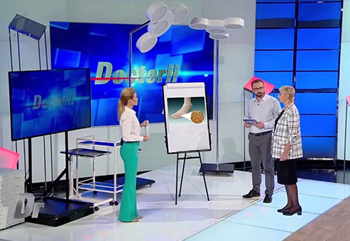
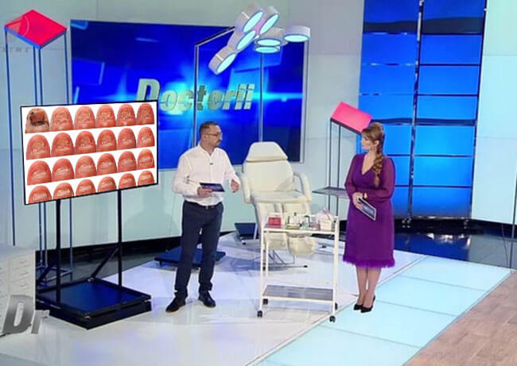
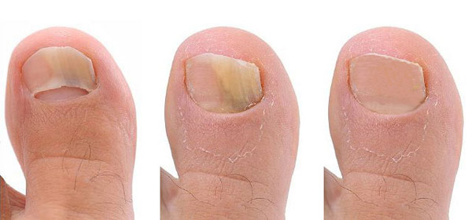
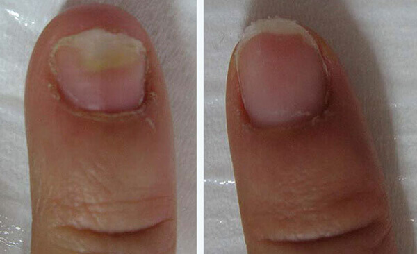
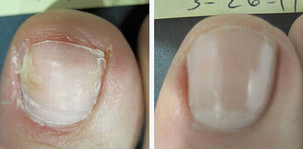

EGÉSZSÉG
Láb- és körömgomba Milyen veszélyeket hordoznak ezek a betegségek és hogyan szabadulhatsz meg tőlük?
Szerkesztők: Statisztikák szerint, a Földön majdnem minden ötödik ember szenved gombás fertőzésektől a lábfején vagy a körmén. Megjelenésük oka különbözhet - a legyengült immunrendszertől egészen a kényelmetlen cipőkig.
Az orvostudomány jelentős alakja, Dr. Tóth Tamás, elárulja, hogyan segíthetnek a modern szerek a veszélyes és nem kívánt betegségek ellen, mint például a láb- és a körömgomba, mindössze egy hónapos otthoni kezeléssel.
Dr. Tóth Tamás: A mai beszélgetésünket kezdjük azzal a ténnyel, hogy sokan a láb- és körömgombát csupán esztétikai problémaként kezelik és nem tartják az egészségre ártalmasnak. Valóban így van ez ? Tudjuk meg.
Hogyan szabadulhatsz meg a láb-és körömgombától ?!
A láb- és körömgomba, orvosi szaknyelven onychomycosis, komoly veszélyt jelent az egészségünkre, egy előrehaladott betegség esetén. A hosszadalmas onychomycosis kiválthat allergiás reakciót, legyengítheti az immunrendszert, serkentheti a krónikus betegségek kialakulását. Ez azt jelenti, hogyha krónikus betegségben szenvedsz, akkor a gombák kialakulása súlyosbíthatja a betegségek mértékét!
Más szóval, ez az egyszerű láb- és körömprobléma veszélyes az emberi életre! Ilyen szempontból fontos megjegyezni az alábbiakat:
Először is, a gomba nem egy 'egyszerű láb és köröm probléma', hanem egy teljes körű, a testre kiterjedő parazitafertőzés. A láb- és körömgombát a testedben élő paraziták okozzák. Másodsorban, maga a gomba nem életveszélyes, de a már meglévő betegségeken sokat ronthat.
Általánosságban, ha valamilyen krónikus problémától szenvedsz, például valamilyen gyomor- vagy májbetegségtől, akkor a gomba jelenléte negatív hatással lehet az autoimmun-rendszerre, ami által a krónikus megbetegedések akuttá válhatnak.
 Tóth Tamás: Soroljuk fel az onychomycosis tüneteit.
Mik az onychomycosis első tünetei? Hogyan állapíthatjuk meg azokat, ha a veszély már fennáll?
Soroljuk fel az onychomycosis tüneteit.
- Bőrrepedések az ujjak közötti hajlatokban . (többnyire az első és a második, vagy a negyedik és az ötödik újjak között)
- - Dudorok a bőrön
- - Viszketés
- - Kipirosodás - irritáció
- - Égető érzés
- - Bőrmegvastagodás, töredezett, sérülékeny, elszíneződött körmök
A lábfej területén kezdődik, többnyire a lábujjak között. Általában a gomba első tünete
a hámló bőr, amit égető érzés és viszketés kísér.
Statisztikáink szerint, nagyjából a magyar emberek 20%-a szenved a gombás fertőzésektől. Egyes esetekben a betegek korai gombafertőzése könnyen gyógyítható, de másoknál a betegség annyira előrehaladott, hogy a gyógyulás sok időt vehet igénybe. A másik gond az, hogy nem mindenki veszi komolyan ezt a betegséget és nem vesz igénybe orvosi segítséget. Azt hiszik, hogy a gomba magától eltűnik és nem tér vissza. Az igazság az, hogy ez a bakteriális fertőzés nem fog eltűnni, amíg nem teszel ellene valamit. A gomba továbbterjedhet az egész testre, belepheti teljesen a lábakat és a körmöket.
A láb- és körömgomba kezelése
Végre eljutottunk ahhoz a részhez, hogy hogyan is kezelhetjük ezt a betegséget. A hagyományos kezelés során, amit gyakran ajánlanak fel a klinikáinkban, a fertőzött körmöket sebészi úton távolítják el, amelyet egy 1-2 hónapos lábadozási időszak követ. Véleményem szerint, ez egy barbár módszer a 21. században, de az orvosaink az esetek 99%-ban ezt a lehetőséget javasolják! Emeljék fel a kezüket azok, akik nem akarják sebészeti úton megoldani ezt a problémát?
 Tóth Tamás Hát, jó sok kezet látok!
Napjainkban már sokkal kényelmesebb módszerek léteznek a láb- és körömgomba kezelésére, és sokat fáradozunk azon, hogy ezek a közegészségügybe is bekerüljenek.
A magánközpontok több, különböző megoldást kínálnak a láb- és körömgomba eltávolítására. A legfőbb hátrányuk az árban rejlik. Egy ilyen gombás fertőzés kezelése nagyjából 280.000 forint. Egyértelmű, hogy nem mindenki engedheti ezt meg magának.
Persze nem azért jöttem el a stúdióba, hogy ilyen pesszimista módon fejezzem be az adást. Kertész Magdolna, aki egy hónappal ezelőtt még elhanyagolt onychomycosisban szenvedett, segít nekünk, hogy kicsit optimistábban lássuk a problémát. A kezeléshez, egy különleges krémet alkalmazott a paraziták és a gombák ellen.
A műsor vendége
Független vizsgálatokat kezdeményeztünk a krémmel kapcsolatban a központunkban. Az eredmények alapján kijelenthető, hogy ez a krém tényleg minden betegnek segít. Az esetek 97%-ában, a krém teljesen eltávolítja a gombát a beteg lábfejéről és körméről. A gomba megszűnése után a krém alkalmazható a további fertőzések megelőzésére, ami sajnos bármikor bekövetkezhet. Ami pedig az árát illeti, a akár harmincszor, vagy negyvenszer olcsóbb lehet, mint egy egészségügyi központbeli kezelés ára. Sőt, még a hatékonysága is magasabb.
Itt láthatóak Magdolna fotói (ő volt az egyik résztvevő a tesztcsoportban). Ezek a krém 30 napos használatának eredményei:
 A krém 30 napos használatának eredményei
100%-ig biztosak vagyunk a krém hatékonyságában
Először is, ez egy hivatalosan szabadalmaztatott termék, ami minden vizsgálaton átment. Másodsorban, a terméket mi magunk teszteltük a betegeken, mert nem bízunk a hivatalos statisztikák adataiban. Ahogyan már leírtam, remek eredményeket hozott. A az alábbi összetevőket tartalmazza: Kénpor - megvédi a károsodott bőrfelületeket és megszűnteti a kezdeti tüneteket (kipirosodás és viszketés); Szalicilsav - elpusztítja a gomba főbb csoportjait, köszönhetően a nagyon erős gyulladás és fertőzés csökkentő hatásának; Teafa olaj - fertőzés csökkentő és regeneráló hatással rendelkezik. Segít megőrizni az elért eredményt és meggátolja a további fejlődését. A krém eltávolítja a gombát (még azokat is, amiket csak sebészeti úton lehetne) és számtalan problémát megold, például a viszketést, bőrhámlást, kellemetlen érzést és a rossz szagokat.
Ez egy igazán egyedi gyógymód, ami egyre népszerűbb az egész világon. Az Egészségügyi Minisztériumunk elrendelte, hogy az országunkban ezt a krémet csak termelői áron forgalmazhatják. A magyar állampolgároknak a termék a lehető legolcsóbb áron érhető el. A krém megvásárolható az interneten, bárki könnyedén megrendelheti és használhatja ezt a csodaszert. A kiszállítás postán vagy futár által történik (fizetés csak átvétel után), használata nem igényel semmilyen különleges szakértelmet.
Természetes készítmény a láb- és körömgomba ellen
Jelenleg a termék csak a gyártó hivatalos oldalán kapható. Már tárgyalunk a gyógyszertárak hálózataival, de ők több pénzt akarnak keresni a értékesítésével. A mi véleményünk, akárcsak az Egészségügyi Minisztériumé, ezzel ellenkezik: A lehető legolcsóbb áron szeretnénk biztosítani a terméket azoknak, akiknek szükségük van rá (ami elég aktuális a rengeteg gombás fertőzést figyelembe véve).
Van valamilyen korlátozás a krém használatát illetően?
A nem vegyi anyag, ezért nincsenek mellékhatásai és nem okoz függőséget. Tesztjeinkben 17254 beteg használta a Központunkban a krémet, és senkinek sem volt allergiás reakciója az összetevőkre. A krém ártalmatlan az egészségre, közben hatékonyan megszabadít a gombák összes típusától, még a legveszélyesebbektől is. Külön kiemelném, hogy a krémet bátran alkalmazhatják gyerekeken is.
Zárásképp, egy régi szólást szeretnék elmondani: 'Erősnek kell lenned, mert csak magadra számíthatsz'. A láb- és körömgomba nem csupán esztétikai probléma, ez egy komoly betegség, aminek nagyon súlyos következményei lehetnek. Még most gondoskodj a problémáról, mielőtt késő lenne.
U.I.: Volt egy kérésünk a krém gyártói felé. Itt a lehetőség, hogy olvasóink féláron rendelhessék meg a terméket!
Magamnak rendeltem meg ezt a krémet. A körmeim borzalmasak voltak... azt hittem, el kell majd távolíttatnom őket... de a 30-40 napos krémhasználat után a körmeim újra a régiek! El sem tudjátok képzelni mennyire boldog voltam ! :)
Amikor elkezdtem használni a krémet, nem gondoltam, hogy a hatás ilyen elképesztő lesz. Nagyon boldog vagyok, hogy minden problémám megoldódott a gomba elpusztításával!
Miután megrendeltem a krémet, másnap már hozta is a futár. Már be is fejeztem egy teljes kezelést. Rémisztő belegondolni, hogyan tudtam együtt élni ezzel a problémával.
Már 4 hete használom a krémet, ma van a 30. nap és az eredmények fantasztikusak ! Sok más cuccot kipróbáltam előtte, majdnem megmérgeztem magam a sok gomba-elleni szerrel, de a körmeimet még mindig ette a gomba. Nem tudom kifejezni az örömöt, amit éreztem, hogy végre meggyógyultam! Le is fotóztam a körmeimet előtte. Itt van a kép a krém használata előtt és után, nézzétek meg:

Én is megrendeltem. Azt ígérték még a héten megjön, már nagyon várom a csomagot.
Előrehaladott stádiumú gombás fertőzésem volt, nem vettem komolyan, ezért nem is foglalkoztam vele. Akkor jöttem rá, hogy ez komoly, amikor a visszértágulásom rosszabbodott. Az orvosok azt javasolták, hogy lézeres kezeléssel távolíttassam el a gombát, amihez 7-8 alkalomra volt szükség, ami alkalmanként 70.000 forint volt. A fizetésem csak 57.000 forint volt! És biztosan nem akartam egyszerre több körmömet eltávolíttatni, nem tudtam volna kimenni az utcára. Kipróbáltam minden módszert - semmi sem segített. Aztán szerencsém volt - valahol megláttam a , terméket és megrendeltem. Őszintén szólva, semmilyen elfogadható eredményre nem számítottam, de a gombák mégis eltűntek másfél hónap alatt! Teljesen! Nem hittem el, hogy ez lehetséges. Szeretném kifejezni a hálámat nektek! Bocsi, hogy kicsit sokat locsogok, de még mindig a pillanat hatása alatt vagyok! :)
Azok, akiknek a gomba a lábukon van, tulajdonképpen szerencsések! Nekem a kezemen volt, el tudjátok képzelni mennyire undorító is az?! Az emberek féltették magukat, amikor megláttak, annyira zavaró volt... Nagyon szégyelltem magam. Nem tudtam meggyógyulni, semmi sem segített. Most, hogy a krémet használom (még csak 4 hete), már látható az eredmény! 
Rendszeresen rendelek a termékből. Az egész család használja, még a fiamon is segített, amikor neki voltak ilyen gondjai.
A gombásfertőzésem miatt rendeltem meg ezt a krémet. Már nagyon régóta zavart és elegem lett. Mindössze egy pár hétig használtam a krémet és minden helyreállt.
Ez az interjú nagyon érdekes, köszönöm! Hála neked, az emberek végre tisztán látnak!
Ez nem csak egy átverés? Miért csak az interneten árulják?
Judit, te egyáltalán olvastad a cikket ? Azért árulják az interneten, mert a pénzéhes emberek a gyógyszertárak hálózataiban csak a zsebeiket akarják megtömni! Hogyan lehetne átverés, ha csak a termék átvételénél kell fizetni? Én is megrendeltem, kihozta egy futár. Ha a postás hozza a csomagot, akkor is ugyanez történik - (utánvét). Mellesleg manapság már mindent árulnak az interneten, a ruháktól a bútorokig.
Ó sajnálom, nem vettem észre az utánvétre vonatkozó információt. Akkor minden rendben, az utánvét teljesen biztonságos. Megyek és rendelek egyet én is.
Én is megosztom az örömömet. A körmeim folyamatosan sérültek voltak és fájtak. Próbáltam egy különleges körömkrémet használni, de az csak átmeneti megoldás volt. Most, hogy én is a használom, láthatóak az eredményeim a képen. Már 4 hete kenem a körmömre, de úgy döntöttem, végigcsinálom a teljes kezelést (1 hónap). 
Köszönöm szépen a tippeket. Végre megszabadulhatok a gombáktól. Mennyi hülye betegséget elkaphat egy ember!
Olvastam a sok ajánlást, és úgy döntöttem, nekem is meg kell vennem, megyek is, megrendelem.